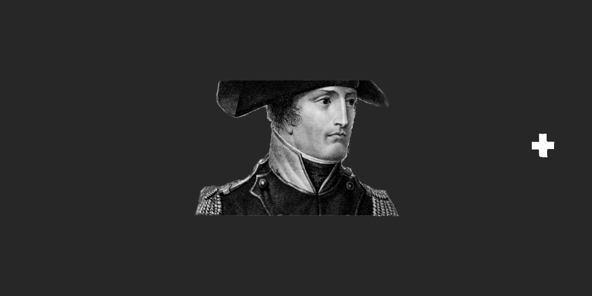
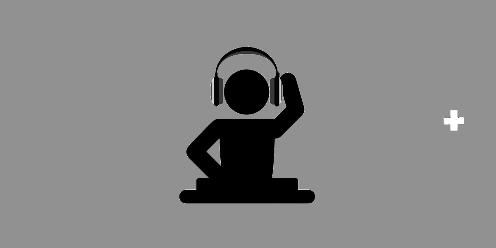
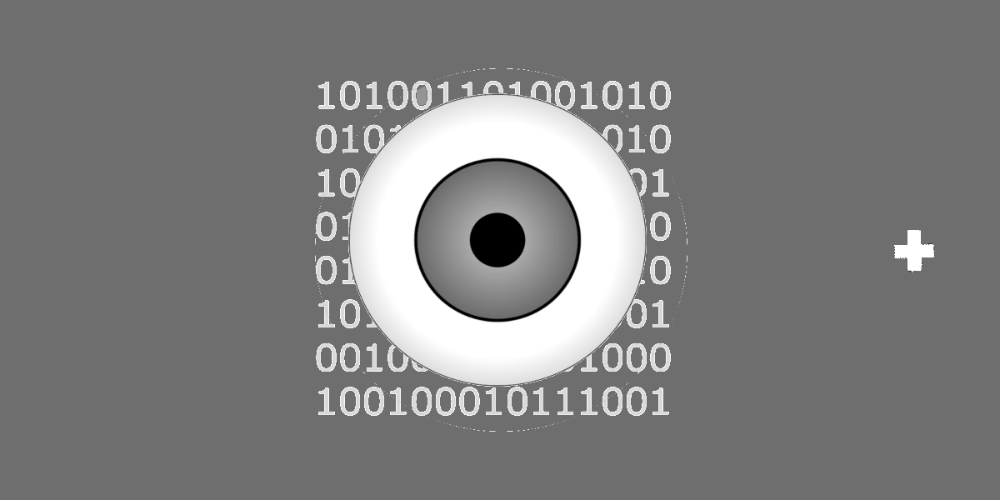
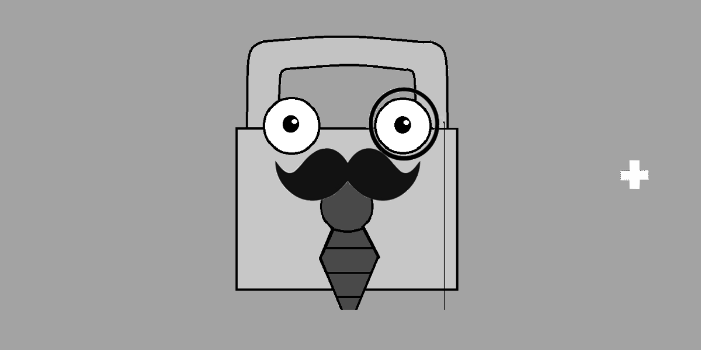
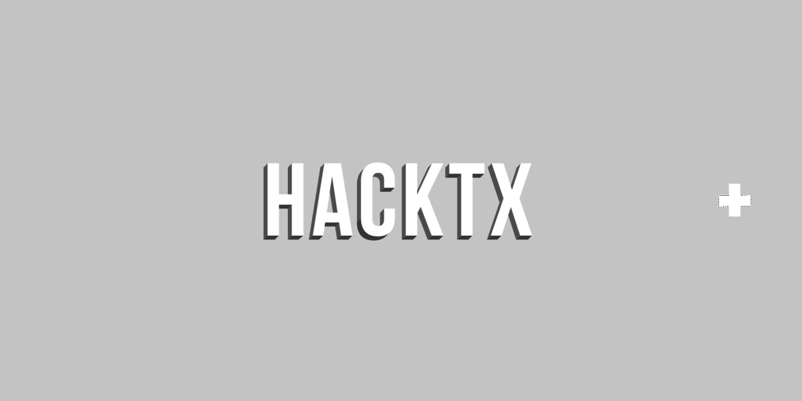
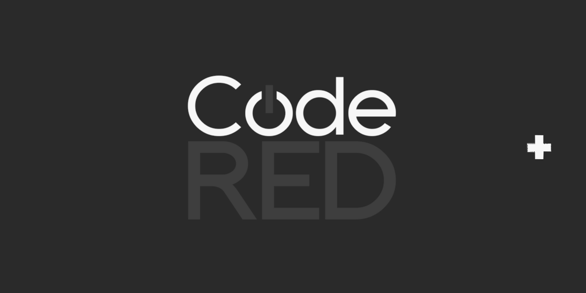
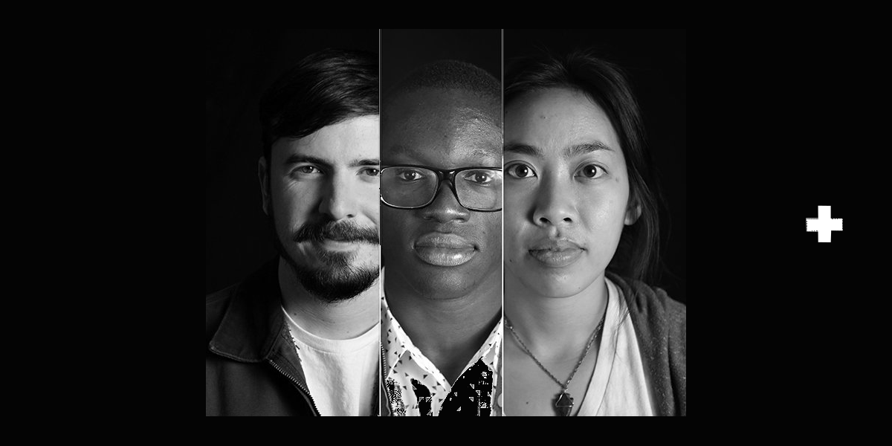
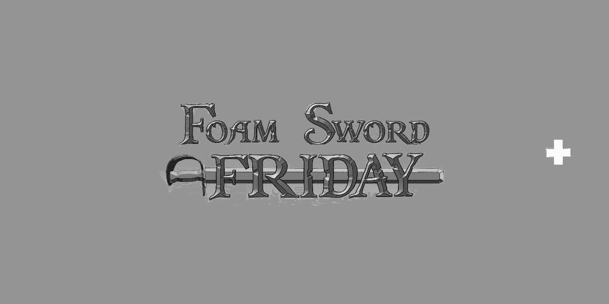
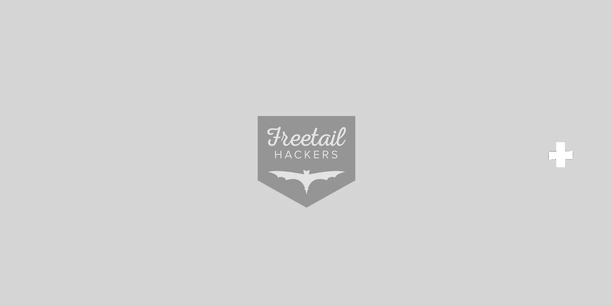

Self-Portrait
I'm an aspiring inventor who seeks to learn something new every day. I am currently a Senior at the University of Texas at Austin. I plan on graduating Spring of 2016 with a degree in Integrated Circuits and Computer Engineering through the Electrical and Computer Engineering department and a minor in Government. My interests include cyber security, defense, consulting, app development, and event organizing. However, the list of all my passions extends much further.
My dream job is to obtain a position where I can create new things to help better all the individuals around me. If you're interested in someone with my skill-set, or would like to discuss something tech. related feel free to reach out. I'd love to talk.
Projects
Sentiment
Sentiment is a Plantronics sponsored application which identifies human emotion in speech. The application offers its user an emotion recognition analysis service by extracting vocal parameters indicative of emotional states for incoming audio through a phone call. Sentiment may provide audio and display notifications to the user based on the user's desired Settings.This project spanned from Fall 2014 - Spring 2015 as part of my senior design project. I developed Sentiment in conjunction with a team of five students and a faculty mentor. My main contribution to this project was dealing with the initial speech processing and developing the algorithm using a Java based machine learning platform.

Castaway
To be simple and brief Castaway is a Pandora for podcasts. My team at the Battle of the Hacks hackathon and I wanted to create something that could solve the problem of craving similiar content after listening to an inspiring podcast. Much like how many individuals desire to listen to similiar artists we wanted to create a website that could help people find podcasts that were similiar in nature to podcasts they listened to. In order to accomplish this we used node.js with jade and html framework.
Code on Github: https://github.com/hacktx/Castaway

DJ Soundboard
This project was my final project for my EE445L course. In this course we spend weeks developing hardware/software projects. My labpartner and I created a DJ touch Soundboard. The soundboard had 6 functioning buttons which each produced a different sound. These sounds could be layered to create music.
Components: Designed with a Touchscreen Kentec display. Also used a TMC1234 Launchpad.
Code on Github: https://github.com/NickEngmann/DJ-Setup

PiSight
PiSight is a platform that can analyze the mac addresses of all nearby devices that are wifi enabled. By identifying the nearby devices you can both keep track of inflow and outflow of individuals in networked locations. This is a cheap way for cities or governments to analyze secure locations in cases of emergencies. This technology also has the ability to triangulate locations of wifi enabled devices.
Components: Raspberry Pi. Scripts Programmed in Python. Server ran on a Flask backend with Python scripts to do calculations
Code on Github: https://github.com/justinar/MACisolation
Live website: PiSight
Devpost website: http://devpost.com/software/macisolation/

Mr. Lockman
Mr. Lockman deals with the moderl day problem of security. If you lose your keys then you are unfortunately locked out of your house/home. With Mr.Lockman you could access your home using fingerprint identification on your smartphone.Mr. Lockman features doesn't end there. Mr. Lockman is a smartlock that has multiple layers of security. My team at the CodeRED Hackathon of Fall 2015 added a facial recognition system with a camera and a raspberry pie to also ensure security.
Made the circuit, HTTP server API, and iOS app from scratch in 24 hours. Used Raspberry Pi, OpenCV, Flask, and iOS Swift SDK.
Code on Github: https://github.com/kirmani/lockman
Video Demo: https://www.youtube.com/watch?v=yeRFB5OWGaw
Awards&Accomplishments


2nd Place Winner & Most Creative Project at CodeRED 2015
Won second place overall at CodeRED 2015 Hackathon. Also won Most Creative Project as judged by Pariveda Solutions.


Organizations
Archer Fellowship
From January 2016- May 2016 I will be a fellow in the Bill Archer Fellowship in Washington DC. This is a fellowship that brings students from the University of Texas system to Washington, D.C. in order to take classwork related to piolitics and advocacy whilst interning for an organization of their choice.I hope to gain a better understanding of politics and government through the coursework provided in the Archer Fellowship whilst gaining valuable experience at my internship.

FreeTail Hackers Advisory Board
Freetail Hackers is the new organization which started at the University of Texas at Austin. Formerly known as HackTX, Freetail Hackers goal is to grow and contribute to the Texas hacker community throughout the year. As a former member of HackTX I am on the advisory board to assist the leaders of Freetail Hackers with any decisions that complement my skillset.